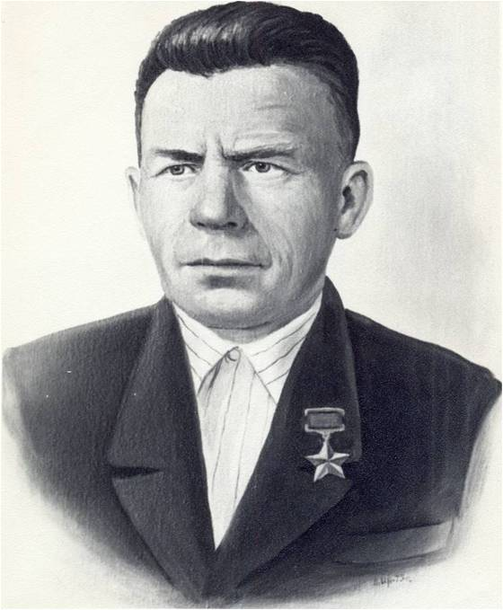

Коряковский Иван Сергеевич
(18.10.1912 – 22.09.1973)
Герой Советского Союза. Старший лейтенант. Родился в д. Коряково Бобровско - Захаровской волости, впоследствии Захаровского сельсовета Кичменгско-Городецкого района. В Красной Армии с 1934 года. Служил в авиадесантных войсках. Участвовал в Финской кампании.
На фронтах Великой Отечественной войны с ноября 1941 года. Был командиром минометного расчета на Волховском фронте. Помощником командира минометного взвода воевал на Центральном, Степном и 3-м Украинском фронтах. В июле 1942 г. он уже помощник командира взвода. В одном из боев снаряд разорвался рядом, и его контузило, осколки впились в ногу, а товарищей убило. Очнулся, оттащил погибших, и открыл беглый огонь из миномета. Подавил несколько минометных точек врага и уничтожил десятки фашистских солдат и офицеров. За этот подвиг был награжден медалью «За отвагу». В 1943 году участвует в боях за Харьков. За грамотные действия, смелость и волю к победе он был награжден орденом Красной Звезды, получил звание лейтенанта и стал командиром минометной роты.
В марте 1944 года войска 1,2,3 Украинских фронтов перешли в наступление, и рота И.С. Коряковского вышла на берег Днестра. Началось освобождение Молдавии. Форсировали реку, закрепились и в точное время начали из минометов обстрел позиций врага. Вместе с пехотинцами отражали контратаки противника. Командование двумя стрелковыми ротами и минометным взводом взял на себя лейтенант И.С. Коряковский. Отбивали атаки противника их же захваченными пулеметами и автоматами. Умелая оборона помогла переправиться всему полку и дальше развить наступление. Удержали плацдарм, отбив 14 яростных атак противника, уничтожив 9 пулеметов, 3 миномета и 36 солдат и офицеров. В ходе Ясско-Кишиневской операции И.С. Коряковский командовал тремя ротами минометчиков. В ходе боев отлично готовили позиции и выпустили по врагу 12 тысяч мин.
Указом Президиума Верховного Совета СССР от 15.09.1944 года Коряковскому И.С. было присвоено звание Героя Советского Союза. Затем принимал участие в освобождении Югославии, где получил тяжелые ранения. В мае 1945 года был демобилизован. Награжден орденами: Ленина, Красного Знамени, Красной Звезды, медалью - «Золотая Звезда» Героя.. В селе Кичменьга установлен бронзовый бюст Героя, а в Кичменгском Городке одна из улиц носит его имя.
В марте 1944 года войска 1,2,3 Украинских фронтов перешли в наступление, и рота И.С. Коряковского вышла на берег Днестра. Началось освобождение Молдавии. Форсировали реку, закрепились и в точное время начали из минометов обстрел позиций врага. Вместе с пехотинцами отражали контратаки противника. Командование двумя стрелковыми ротами и минометным взводом взял на себя лейтенант И.С. Коряковский. Отбивали атаки противника их же захваченными пулеметами и автоматами. Умелая оборона помогла переправиться всему полку и дальше развить наступление. Удержали плацдарм, отбив 14 яростных атак противника, уничтожив 9 пулеметов, 3 миномета и 36 солдат и офицеров. В ходе Ясско-Кишиневской операции И.С. Коряковский командовал тремя ротами минометчиков. В ходе боев отлично готовили позиции и выпустили по врагу 12 тысяч мин.
Указом Президиума Верховного Совета СССР от 15.09.1944 года Коряковскому И.С. было присвоено звание Героя Советского Союза. Затем принимал участие в освобождении Югославии, где получил тяжелые ранения. В мае 1945 года был демобилизован. Награжден орденами: Ленина, Красного Знамени, Красной Звезды, медалью - «Золотая Звезда» Героя.. В селе Кичменьга установлен бронзовый бюст Героя, а в Кичменгском Городке одна из улиц носит его имя.